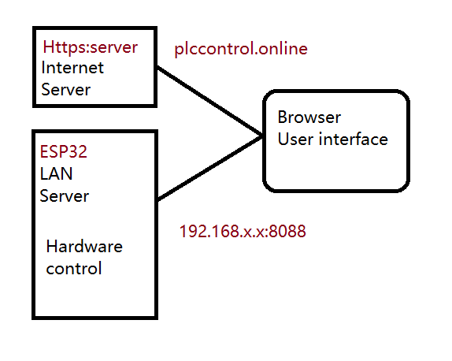

About this project
The project was designed using the latest technology tools such as libraries Nodejs, System-on-Chip MCU and Web App etc. The hardware can be connected with third party devices and common standards such as MQTT and Modbus. This reduces costs and shortens time to market. On the software side, the web application is cross-platform and requires no installation. Since the memory stored by the MCU is large, it can even support multiple html pages, just like a small server. It creates a web application that can run without a network.
Developing Programs with Donkey Builder
Easy Ladder Logic Generator is a newly designed web application for 2024. It is by far the most advanced, powerful, intuitive, easy-to-use and flexible graphical program development package on the automation market. It is very easy to learn yet provides the ability to complete complex program operations with ease. It improves programmer productivity, program reliability, documentation, and supports the development of reusable program components. PLC software technology takes a generational leap with the introduction of the Easy Ladder logic generator.
Easy Ladder Logic also provides combined language programming and mixed C++. You can use C++ to call function blocks or ladder diagrams to call C++, etc., and cooperate with multi-MCU designs to realize interfaces with most external devices.
8 special input/output groups, each group contains 4 pins, controlled by independent MCU, used to control stepper motors or servo control, SPI and Uart devices, etc.
As shown in the picture above, editing PLC programs can be done through an online website or a small server in esp32. The online server will be updated regularly. If the user updates the ESP32 firmware, both sides are basically the same.
To save costs, We used existing hardware on the market and designed only the necessary parts. Software and firmware downloads and support available. Users can create their own projects and select their parts.
Modular design
The ESP32 S3 MCU stands as a potent testament to the transformative power of modern microcontroller units (MCUs). With its comprehensive array of functions and pivotal system-on-chip architecture, the ESP32 S3 emerges as an exemplary choice, balancing cost-effectiveness with robust performance.
At its core, the ESP32 S3 harnesses a remarkable blend of capabilities. Its intrinsic wireless communication capabilities coupled with a built-in HTTP server exemplify its versatility and utility. Moreover, the generous allocation of memory further enhances its capacity to handle complex tasks and data-intensive applications.
In our endeavor, the adoption of the ESP32 S3 MCU has proven instrumental, particularly within our PLC systems. By seamlessly integrating this MCU, we've unlocked a spectrum of functionalities ranging from facilitating human-machine interaction to enabling seamless network communication protocols.
The ESP32 S3's prowess extends beyond its technical specifications; it embodies a paradigm shift in the realm of embedded systems, empowering developers and engineers to realize innovative solutions at a fraction of traditional costs. Its amalgamation of affordability and performance sets a new standard within the industry, driving progress and innovation in diverse domains.
In summary, the ESP32 S3 MCU represents more than just a component; it symbolizes the convergence of cutting-edge technology and practical application, underscoring its pivotal role in shaping the future of embedded systems and IoT devices alike.
Software structure
As shown in the picture above, editing PLC programs can be done through an online website or a small server in esp32. The online server will be updated regularly. If the user updates the ESP32 firmware, both sides are basically the same.
To save costs, We used existing hardware on the market and designed only the necessary parts. Software and firmware downloads and support available. Users can create their own projects and select their parts.
Communication protocol
When establishing connections between modules, the choice of communication protocols plays a pivotal role in ensuring reliable data transmission. For short-distance communication, RS232 emerges as a dependable option, offering stable connectivity within close proximity. Conversely, for longer distances and environments prone to electrical noise, RS485 stands out as the preferred solution, characterized by its robustness and extended range capabilities.
In our configuration, the connection between the PLC system and the data acquisition computer transcends conventional paradigms. Leveraging the MQTT (Message Queuing Telemetry Transport) protocol, we've embraced a modern and efficient approach to data exchange and synchronization.
The MQTT protocol's lightweight nature and efficient publish-subscribe architecture make it an ideal choice for our needs. By facilitating seamless communication between disparate devices and systems, MQTT transcends the constraints of traditional point-to-point connections, fostering a dynamic ecosystem of data sharing and collaboration.
In essence, by adopting the MQTT protocol, we've transcended the limitations of conventional communication paradigms, ushering in an era of interconnectedness and interoperability. This strategic decision not only enhances the efficiency of our systems but also lays the foundation for scalable and future-proof solutions in the ever-evolving landscape of industrial automation and data acquisition.
RS232 for short distance communication, or RS485 for long distance communication. Mqtt or Ethernet can also be used depending on the situation.
Simple open format that can be converted to any standard such as modbus. This PLC is basically designed for small systems.
API software templates will be provided
Basic features
| Item | Design | Details | Remarks |
|---|---|---|---|
| Input/Output | Default 8 | Resistor to config input voltage | |
| Network expension | maximum 4 | Not include local extension | Via Mqtt |
| 4 pins Input/output | 8 group | Provide CLK date and select | No |
| Wireless Communication | Mqtt,tcp,udp | No | No |
| Wire Communication | UART | Wire length limited 3m | |
| Soc MCU | 1 | 4 | Each PLC maximum contains 4 MCU |
| Analog | 8 bits | 12 bits | Work independently |
| Relay coil voltage | 5 volt | ||
| Relay control voltage | 24VDC/1A or external Relay | 110VAC/0.5A | No |
| Real time clock | Support | Online only | |
| Counter | Fast speed counter | - | interrupt counter |
| Function block | Support | - | C++ |
| Human machine interface | Support remote or local | HTML page | |
| Remote update | Yes | ||
| Phone interface | Support | Yes | HTML PWA |
| Local link up | upto 3 PLC | Via uart | |
| Simulation | Offline or online | Ladder logic only | |
| Firmware update | Support | For all MCU | |
| Open source | Peripheral control only | C++ | |
| Reliability | Dual watch dog timers | - | - |
| Data acquisition | Support | - | Mqtt |
| Program debug | Support | C++ only | recommend platformIO |
| 3nd party device | Support | Tempate provided | Via user program |
(1) Features comparison
| Feature | Donkey PLC | China Semi clone | Other Brands |
|---|---|---|---|
| Price | $100 | $30 | $300 |
| Software | $0 | $120 | $500 |
| APIs | Arduino C++ | No | No |
| Communication | Mqtt | No | No |
| Firmware Update | Yes | No | Yes |
| Remote control | Yes | No | - |
| Wifi network | Yes | No | - |
| Work offline | Yes | Yes | Yes |
| Built-in GUI | Yes | No | No |
| Online clock | Yes | No | No |
| Analog | Yes | No | - |
| Connect 3rd hardware | Yes | No | - |
| MCU | Dual Esp32S3 | genetic 32bit | - |
| Analog Physical Isolation | Obtional | - | - |
| Digital Physical Isolation | Yes | Yes | Yes |
| Built-in Graphic editor | Yes | No | No |
| Built-in help manual | Yes | No | No |
| Technical support | No | - | |
| Moduler design | Seperate MCU and wiring board | No | Yes |
| Reliability | Dual watch dog timers | - | - |
| Data acquisition | Yes Use Mqtt send back | - | - |
| Combo I/O | Each I/O contains 4 pins | 1 pin | 1 pin |
| 3nd party device | SPI and I2C uart | - | - |
(2) Design components
| Method | Adopted | Resaons |
|---|---|---|
| MCU | System on chip ESP32 | Low cost and high performance |
| Software development tools | Artificial intelligence | Get template software quickly |
| IDE | Visual studio code | No cost and plenty of feature |
| Software resources | Nodejs Library | plenty of library |
| Code Ladder program | Arduino framework | plenty of library |
| Cost | Most common mcu | High reliability with plenty of features |
(3) Software architecture
| Code or type | Location | Appliction |
|---|---|---|
| WiFi | Embedded in ESP32 | For linking between devices and phone |
| http server | Embedded in ESP32 | Graphical interface for editing and help menu |
| https Server | Internet | Provide additional function (optional) |
| C++ | Embedded in ESP32 | Ladder manipulation |
| APIs | System on chip | communication protocol support |
Software functions under developing
Phone remote control in www internet
MODBUS feedback verification
c/c++ support function
API for customer device
HMI
Hardware circuit board under developing
Phone remote control in www internet
MODBUS feedback verification
c/c++ support function